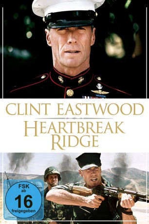

#1744 Heartbreak Ridge
Auszeichnungen: für 1 Oscars nominiert
 gesehen am 15.08.2015
gesehen am 15.08.2015
 
 IMDB-Wertung: 6.8 / 10
IMDB-Wertung: 6.8 / 10  Metascore: 53
Metascore: 53 
Sergeant Tom "Gunny" Highway ist noch ein Kämpfer der alten Schule. Seine Narben und Orden hat er sich bereits im Korea-Krieg verdient. Als Ausbilder in einer Kompanie der Marines wird ihm ein Haufen junger Rekruten zugeteilt. Mit eiserner Faust trommelt er Disziplin und Power in die lasche Truppe. Dass seine Methoden aber gar nicht so veraltet sind, wie seine Vorgesetzten behaupten, kann der alte Haudegen schon bald beweisen: Ein Kampfeinsatz auf einer Karibikinsel steht bevor..
Jahr: 1986
Dauer: 130 Minuten
FSK: 16
Land: USA Studio: Warner Bros.Tonspuren:
Untertitel:
Auflösung: 1080p (1920x1080) Größe: 9922 MB
Genre: Action, Drama, Komödie, Krieg
Regisseur:  Clint Eastwood
Clint Eastwood
Drehbuch: James Carabatsos, Dennis Hackin, Joseph Stinson
Soundtrack: Lennie Niehaus
Darsteller:
 Clint Eastwood als Highway
Clint Eastwood als Highway- Marsha Mason als Aggie
 Everett McGill als Major Powers
Everett McGill als Major Powers Moses Gunn als Sgt. Webster
Moses Gunn als Sgt. Webster- Eileen Heckart als Little Mary
 Bo Svenson als Roy Jennings
Bo Svenson als Roy Jennings- Boyd Gaines als Lieutenant Ring
 Mario Van Peebles als Stitch
Mario Van Peebles als Stitch- Arlen Dean Snyder als Choozoo
- Vincent Irizarry als Fragetti
- Ramón Franco als Aponte
 Mike Gomez als Quinones
Mike Gomez als Quinones- Peter Koch als 'Swede' Johanson
 Peter Jason als Major Devin
Peter Jason als Major Devin Begonya Plaza als Mrs. Aponte
Begonya Plaza als Mrs. Aponte John Hostetter als Reese
John Hostetter als Reese Nicholas Worth als Jail Binger
Nicholas Worth als Jail Binger- Christopher Michael als Marine
 Tom Willett als Bus Passenger , uncredited
Tom Willett als Bus Passenger , uncredited- Tom Villard als Profile
- Rodney Hill als Collins
- Richard Venture als Colonel Meyers
 J.C. Quinn als Quartermaster Sgt.
J.C. Quinn als Quartermaster Sgt.- John Eames als Judge Zane
- Thom Sharp als Emcee
- John Gallagher als Emcee
- Holly Shelton-Foy als Sarita Dwayne
- Timothy Fall als Kid in Jail
- Jon Pennell als Jail Crier
- Trish Garland als Woman Marine Officer
- Dutch Mann als Bar Tough Guy
- Darwyn Swalve als Bar Tough Guy
- Alex M. Bello als Marine
- Steve Halsey als Bus Driver
- John Sasse als Bus Driver
- Rebecca Perle als Student in Shower
 Annie O'Donnell als Telephone Operator
Annie O'Donnell als Telephone Operator Elizabeth Ruscio als Waitress
Elizabeth Ruscio als Waitress Lloyd Nelson als Deputy
Lloyd Nelson als Deputy- John H. Brewer als Sgt. Major in Court
- Michael Maurer als Bouncer in Bar
- Tom Ellison als Marine Corporal
- William Walker als Sailor On Bus , uncredited
Datei: X:\1986\Heartbreak Ridge (1986, FSK16, 1920x1080).mkv seit 13.08.2015
Festplatte: HD 1980-1986
 Es gibt insgesamt 50 Filme in der Gruppe '1986'
Es gibt insgesamt 50 Filme in der Gruppe '1986'